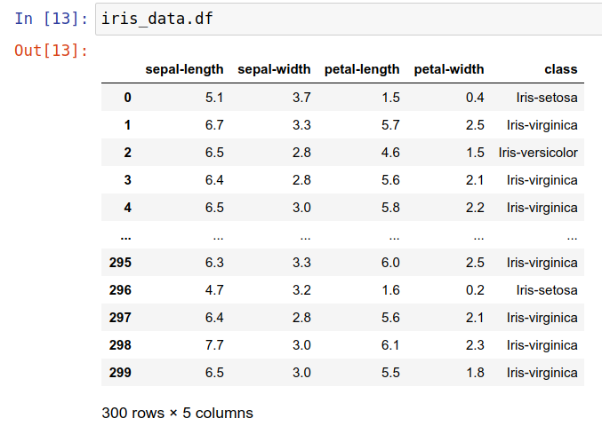

Naive Bayes
Data set: Iris
Data Preprocess
1 | import pandas as pd |

Model
1 | from math import log, exp, sqrt, pi |
Constructor:
- 把 dataframe 與 label 存起來
Member variables:
- prob:
- 一個 dictionary 用來存 log(P(Y))
- prob[label] = log(P(Y))
- prob_cond:
- 一個 dictionary 用來存 log(P(Fx|Y))
- prob_cond[label][feature][event] = log(P(Fx|Y))
Train
1 | class IrisModel: |
train():
- 變歷每個 label
- 把 dataframe 包含那個 label 的資料篩選出來叫做 Y
- 算出 prob, mu 以及 variance
__calcLabelProb():
- 算出 label 的機率為：篩選出來的數量 / train data的總數量
- 若算出來為 0 則 return -1e9 (因為 log(0))
__calcMu():
- 變歷 FEATURE 這個 list: [‘sepal-length’, ‘sepal-width’, ‘petal-length’, ‘petal-width’, ‘class’]
- 若 feature 不叫 ‘class’ 就算出他的平均數
__calcVariance():
- 變歷 FEATURE 這個 list: [‘sepal-length’, ‘sepal-width’, ‘petal-length’, ‘petal-width’, ‘class’]
- 若 feature 不叫 ‘class’ 就算出他的變異數
Train-Test-Split
1 | class IrisModel: |
test():
- 先建立一個都是 0 的 confusion matrix
- 對 dataframe 變歷 rows
- 先存出每個 rows 的答案 (label)
- 對剩下的 events 丟進 __predict()，會 return 猜出來的結果
- 對 confusion matrix 存成 dataframe 並 return
__predict():
- 變歷所有 labels
- 這個 testcase 中的這個 label 的機率以 log(P(Y)) 作為初始值
- 變歷這個 testcase 的 feature 與 x (值)
- 帶入 Gaussian distribution 的公式算出條件機率並不斷累加
- 若機率為 0 則加上 -1e9 (因為 log(0))
- return 這個 dictionary 中最大的 label
Validation
Holdout validation
1 | class IrisModel: |
- 把 data 分成 7:3
- 用 7 來 train model
- 用 3 來 test model
- print 出 confusion matrix
1 | print("1) Holdout validation with train/test:7/3") |
Result:
1 | 1) Holdout validation with train/test:7/3 |
K-fold cross validation
1 | class IrisModel: |
- 計算 fold 中的 part 的大小
- 做 K 次 train-test
- print 出 confusion matrix
1 | print("\n2) K-fold cross-validation with K=3") |
Result:
1 | 2) K-fold cross-validation with K=3 |